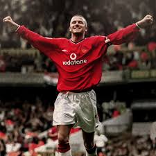

Manchester United by far is my favorite football team.
They play in Premier League which is the highest football league in England.
Manchester United has won numerous domestic and international titles, including 20 English Premier League titles, 12 FA Cups, 5 EFL Cups, and 3 UEFA Champions League titles.
The team plays its home matches at Old Trafford, a historic stadium located in Greater Manchester. It has a seating capacity of over 74,000 spectators, making it one of the largest football stadiums in the UK.
Noticible Rivals: Liverpool, Manchester City. Both of these teams have a lot of drama and excitement that they are named North West Derby and Manchester Derby
Wayne Rooney

David Beckham
Paul Scholes